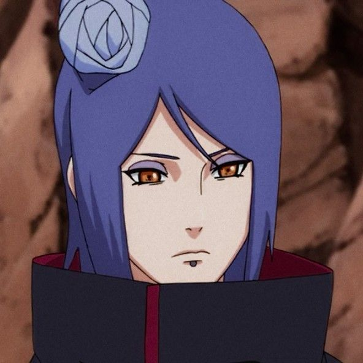
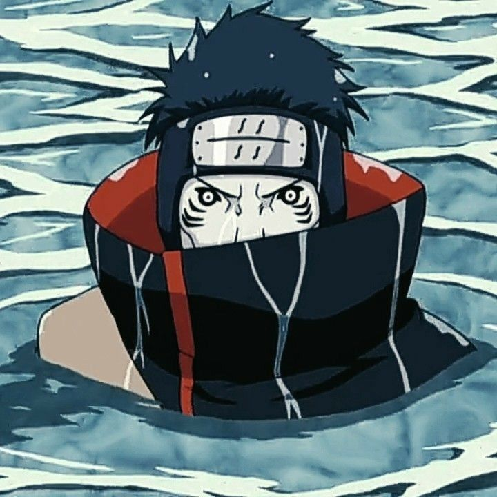
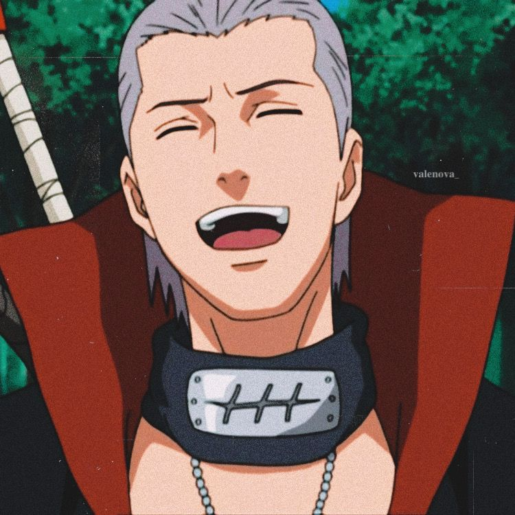
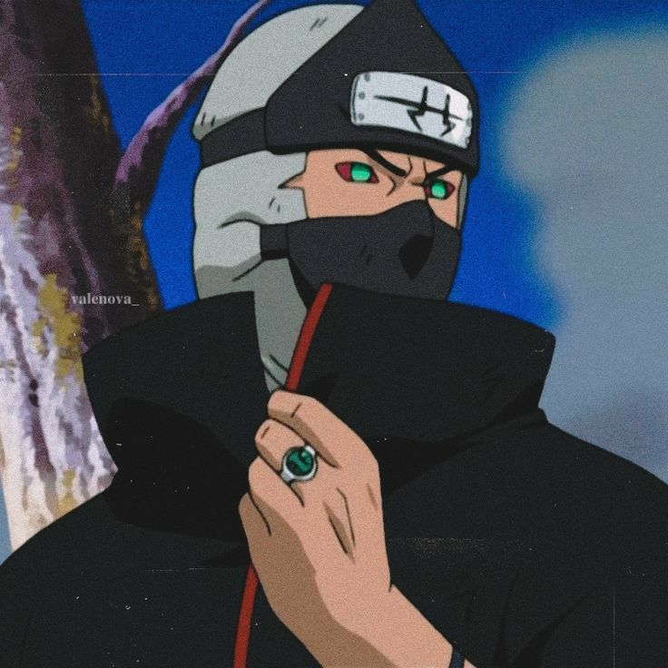
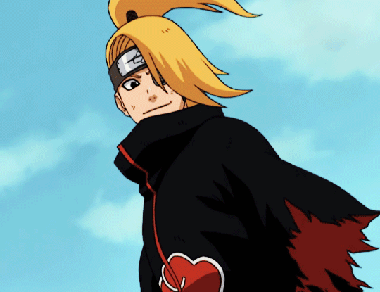
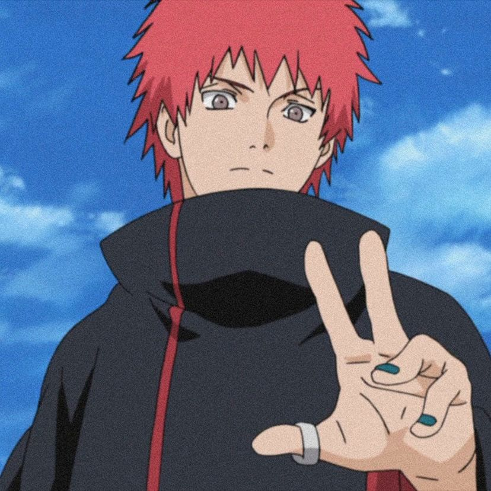

Pain, the enigmatic orchestrator of suffering, harnesses his godlike powers to unleash a symphony of anguish upon his enemies, leaving devastation in his wake as he seeks to reshape the world through the crucible of pain.

Obito, the veiled manipulator, weaves a tapestry of despair, utilizing his Sharingan to cast his victims into a labyrinth of agony, as he orchestrates a grand scheme to rewrite reality itself, driven by his own profound personal pain.

Konan, the paper angel, crafts a delicate but lethal dance of pain, transforming sheets of paper into deadly weapons that pierce with precision, leaving her foes ensnared in a tapestry of agony while she fights to protect her ideals and avenge her fallen comrades.

Itachi, the tragic prodigy, inflicts a tempest of pain with his Sharingan, manipulating the very fabric of perception to torment his adversaries, burdened by the weight of his dark past and the sacrifices he made in pursuit of a twisted peace..

Kisame, the ruthless shark-like shinobi, wields his immense strength and swordsmanship to drown his foes in a sea of unyielding pain, embodying the relentless power of the Hidden Mist Village.

Hidan, the immortal zealot, revels in the ritualistic dance of pain and bloodshed, embracing his immortality to inflict unending torment upon his adversaries, preaching the gospel of suffering as his twisted creed.

Kakuzu, the heartless mercenary, extracts every ounce of agony from his victims with his multiple life-stealing hearts, reveling in the pain he inflicts as a testament to his insatiable greed and longevity.

Deidara, the explosive artist, sculpts his deadly art with a sadistic glee, engulfing his enemies in a symphony of agony and destruction, as his explosive creations become the harbingers of pain.

Sasori, the master puppeteer, weaves intricate threads of suffering, controlling his victims like marionettes, as his poison-laden weapons inject excruciating pain, turning life into a macabre performance.